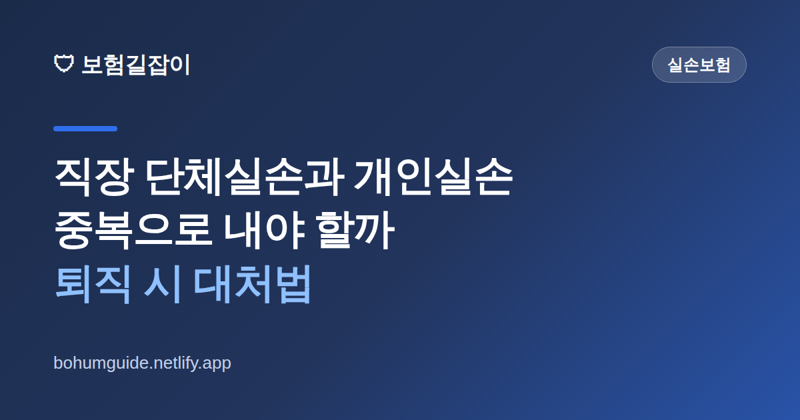

직장 단체실손과 개인실손, 중복으로 내야 할까? 퇴직 시 대처법
"회사에서 단체실손을 들어준다는데, 내가 따로 낸 개인실손은 낭비 아닌가?" 반대로 "퇴사하면 회사 실손이 사라지는데 그때 개인실손을 새로 들면 되나?" 두 실손이 겹칠 때와 끊길 때를 어떻게 관리하느냐에 따라 매달 나가는 보험료와 보장 공백이 달라집니다.

✍️ 편집자 참고: 본 글은 초안입니다. 실손 중지·재개 제도의 조건·대상은 제도 개정과 보험사별 운영에 따라 다르니, 게시 전 금융감독원·손해보험협회 최신 안내와 가입 보험사 약관으로 검수해 주세요.
직장인이라면 회사가 복지로 가입해 주는 단체실손보험과, 본인이 직접 가입한 개인실손보험을 동시에 가진 경우가 많습니다. 그런데 실손은 실제 쓴 병원비를 보상하는 구조라, 두 개가 있다고 보험금을 두 배로 주지는 않습니다. 그래서 "둘 다 유지하면 손해 아닌가"라는 의문이 생깁니다. 결론부터 말하면, 무작정 해지하기보다 '중지·재개 제도'를 이해하고 관리하는 것이 핵심입니다.
실손은 겹쳐도 '두 배'로 안 준다
실손보험은 정해진 금액을 주는 정액형이 아니라 실제 부담한 의료비를 보상하는 실손형입니다. 따라서 단체·개인 실손 두 개가 있어도 실제 병원비를 넘어서 중복으로 받을 수는 없고, 두 보험이 비례해 나눠 부담하는 방식으로 정산됩니다. 이 원리는 개인실손 두 개를 든 경우에도 같은데, 자세한 내용은 실손보험 중복가입하면 보험금 두 배 받을까 글에서 더 다룹니다.
그래서 '같은 성격의 실손'을 두 개 유지하면 보험료만 이중으로 내고 보상은 한도 안에서만 받는 비효율이 생길 수 있습니다. 다만 회사 단체실손은 보통 내가 보험료를 내지 않거나 회사가 부담하는 경우가 많아, "겹치니 무조건 손해"라고 단정하기 어렵습니다. 내가 직접 돈을 내는 것은 대개 개인실손 쪽이므로, 관리의 초점은 개인실손을 어떻게 다루느냐에 맞춰집니다.
핵심 열쇠: 개인실손 '중지·재개' 제도
여기서 알아두면 크게 도움이 되는 것이 개인실손 중지(보험료 납입·보장 일시 중단) 후 나중에 재개할 수 있는 제도입니다. 일정 요건을 갖추면, 회사 단체실손으로 보장이 되는 기간에는 개인실손을 해지가 아니라 '중지'해 보험료 부담을 줄이고, 퇴직 등으로 단체실손이 사라지면 다시 '재개'해 보장을 이어갈 수 있습니다.
왜 해지 대신 중지인가
개인실손을 아예 해지하면, 나중에 다시 가입할 때는 그 시점의 나이·건강 상태로 새 상품(대개 최신 세대)에 재가입해야 합니다. 그사이 병력이 생겼다면 가입이 어렵거나 조건이 나빠질 수 있습니다. 반면 중지는 기존 계약을 살려 두는 것이라, 재개 시 보장 공백과 재가입 부담을 줄일 수 있습니다. 조건·대상은 제도와 보험사에 따라 다르니 반드시 확인하세요.
상황별로 어떻게 할까
내 상황에 따라 선택이 달라집니다. 아래는 일반적인 방향이며, 실제 적용 여부는 가입 보험사·제도 요건에 따라 다릅니다.
| 상황 | 일반적 대응 방향 |
|---|---|
| 재직 중 · 단체실손 보장 충분 | 개인실손 '중지' 요건이 되면 중지해 보험료 절감 검토 |
| 재직 중 · 단체실손 보장 부족 | 개인실손 유지하며 부족한 부분 보완(무리한 해지 금지) |
| 퇴직·이직 예정 | 단체실손 종료 전 개인실손 '재개' 또는 대체 보장 확보 |
| 개인실손 없음 · 곧 퇴직 | 단체실손만 믿지 말고 개인 보장 마련 시점 점검 |
특히 주의할 때가 퇴직·이직 시점입니다. 회사를 그만두면 단체실손 보장이 끝나는데, 그때 개인실손도 없다면 보장 공백이 생깁니다. 게다가 퇴직 후 나이가 들거나 병력이 생긴 상태에서 새로 가입하려면 조건이 불리할 수 있습니다. 그래서 단체실손이 종료되기 전에 중지해 둔 개인실손을 재개하거나 대체 보장을 확보하는 것이 안전합니다. 세대별 실손 구조가 궁금하다면 4세대 실손보험 전환 글을 함께 참고하세요.
실전 체크 & 요약
정리하면 이렇게 관리하면 됩니다. 첫째, 실손은 겹쳐도 병원비를 초과해 받지 못하므로 내가 실제로 보험료를 내는 개인실손을 중심으로 판단합니다. 둘째, 회사 단체실손 보장이 충분하고 요건이 되면 개인실손을 해지가 아니라 중지해 보험료를 아낍니다. 셋째, 퇴직·이직 전에 개인실손 재개나 대체 보장을 준비해 공백을 막습니다.
- 실손은 중복 가입해도 병원비 초과 보상은 없다는 점 이해
- 내가 보험료를 직접 내는 개인실손 위주로 관리 판단
- 단체실손이 충분하면 개인실손은 해지 대신 '중지' 검토
- 퇴직·이직 전 개인실손 재개·대체 보장으로 공백 차단
- 중지·재개 요건과 대상은 보험사·제도별로 다르다 — 반드시 확인
참고할 수 있는 공신력 있는 자료
- 금융감독원 — 실손보험 중지·재개 등 소비자 안내
- 파인(금융소비자 정보포털) — 내 보험 가입 내역 조회
- 손해보험협회 — 실손보험 상품·공시 정보
본 정보는 일반적인 안내이며, 중지·재개 요건과 보장 내용은 각 보험사 약관과 금융감독원 등 관계기관을 통해 반드시 확인하시기 바랍니다.